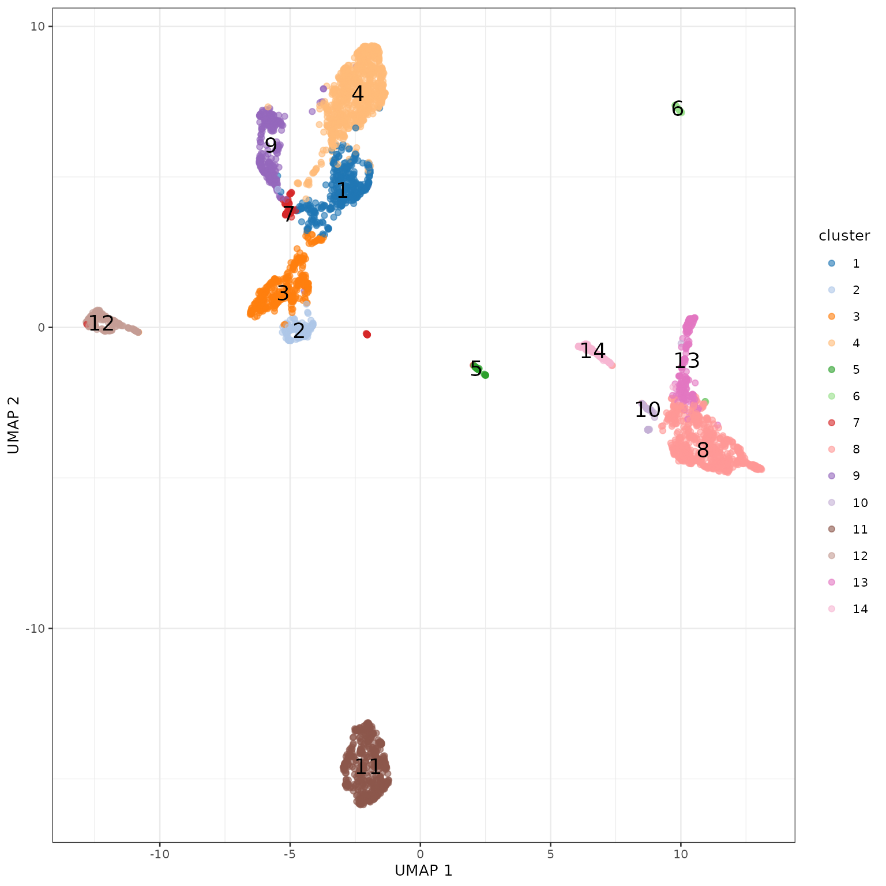

Description
In this workshop (presented in Mandarin), you will learn how to analyse single-cell RNA-sequencing count data produced by the Chromium 10x platform using R/Bioconductor. This will include reading the data into R, pre-processing data, normalization, feature selection, dimensionality reduction and downstream analysis, such as clustering and cell type annotation.
Expectation: You will learn how to generate common plots for analysis and visualisation of single cell gene expfression data, such as diagnostic plots to assess the data quality as well as dimensionality reduction techniques such as principal components analysis and t-distributed stochastic neighbourhood embedding (t-SNE). The material we will be covering on single-cell RNA-sequencing analysis is a subset of the work of Amerzquita et al. (2020) Nature Methods,17:137–145 available at https://osca.bioconductor.org.
Pre-requisites: The course is aimed at PhD students, Master’s students, and third & fourth year undergraduate students. Some basic R knowledge is assumed - this is not an introduction to R course. If you are not familiar with the R statistical programming language it is compulsory that you work through an introductory R course before you attend this workshop.
Participation
After the lecture, participants are expected to follow along the hands-on session. we highly recommend participants bringing your own laptop.
数据准备
下载10x PBMC4k数据并读取。
质量控制。
由于10x 技术会使得外部RNA，也就是不包含微滴的里的细胞被同时测序。在分析之前，我们需要确保得到的barcode数据都相对应活细胞。 这里，我们使用emptyDrops来筛选“真”细胞。
对于得到的基因，根据gene ID 进行基因注释，得到基因名，并且知道其所在染色体（用于之后的细胞质量控制）。
这里，我们认为线粒体表达量高的barcode对应细胞质mRNA已经流出的破损细胞。并用这个指标来进行筛查过滤。
## Mode FALSE TRUE
## logical 3985 315
聚类分析
使用louvain算法进行聚类
louvain算法是一个基于图的聚类算法，我们首先构建Shared Nearest Neighbor（SNN）图，输入为使用主成分分析（PCA）降维后得到的矩阵。 在得到SNN图g之后，我们使用它作为louvain算法的输入。
## clust
## 1 2 3 4 5 6 7 8 9 10 11 12 13 14
## 353 152 376 857 48 46 68 661 287 53 541 198 219 126使用tSNE对聚类进行可视化。

寻找聚类特异表达基因
在获得了聚类之后，我们想要知道每个聚类都哪些高表达的基因，这些基因往往是能区分不同细胞类型的marker gene，也可以帮助我们了解不同聚类的生物学功能。
这里，我们通过比对某一cluster和其他所有cluster的表达来找到marker gene， 并且只挑选显示上调基因。
## DataFrame with 33694 rows and 16 columns
## p.value FDR summary.logFC logFC.2 logFC.3
## <numeric> <numeric> <numeric> <numeric> <numeric>
## LTB 4.74177e-07 0.0159769 0.364873 1.727152 2.003863
## TRADD 3.34176e-05 0.5629862 0.246261 0.246261 0.358697
## TNFAIP3 3.64851e-04 1.0000000 0.294551 0.586788 0.324352
## RP11-138A9.1 5.51754e-04 1.0000000 0.235830 0.265198 0.204199
## CD69 9.05928e-04 1.0000000 0.220119 0.889346 0.220119
## ... ... ... ... ... ...
## RP11-1143G9.4 1 1 -2.88441 0.0632559 0.04136662
## CD79B 1 1 -2.65518 -0.0319757 0.04062722
## CST3 1 1 -3.38955 0.1132112 -0.00139546
## TYROBP 1 1 -3.77926 -0.2135870 -0.12432406
## CD79A 1 1 -2.88958 0.0547465 0.02026294
## logFC.4 logFC.5 logFC.6 logFC.7 logFC.8
## <numeric> <numeric> <numeric> <numeric> <numeric>
## LTB 0.709584 2.236589 3.179486 1.384048 3.011681
## TRADD 0.455837 0.399715 0.625041 0.340638 0.494083
## TNFAIP3 0.386801 0.634728 0.640136 0.539046 0.355789
## RP11-138A9.1 0.297797 0.338809 0.459562 0.235830 0.436762
## CD69 0.182859 1.453419 1.796272 0.809607 1.625559
## ... ... ... ... ... ...
## RP11-1143G9.4 0.02079562 -0.0410564 -0.0987084 -0.0922961 -2.8844113
## CD79B 0.03988754 -0.0332708 0.0275658 -0.2155062 0.0970271
## CST3 -0.00267045 -2.1438978 -1.5534313 -0.1021948 -3.3895523
## TYROBP -0.04510738 -1.6678515 -0.4775968 0.0929494 -3.7792602
## CD79A -0.02744100 -0.1171942 0.0907275 -0.0144729 0.0329842
## logFC.9 logFC.10 logFC.11 logFC.12 logFC.13 logFC.14
## <numeric> <numeric> <numeric> <numeric> <numeric> <numeric>
## LTB 0.364873 1.564212 0.345040 2.919553 2.640417 2.967425
## TRADD 0.219922 0.466701 0.454696 0.485817 0.455422 0.358617
## TNFAIP3 0.573474 0.294551 0.641317 0.537594 0.548100 0.548964
## RP11-138A9.1 0.261783 0.382809 0.292954 0.393811 0.414021 0.436237
## CD69 1.210379 1.001879 0.441418 0.696360 1.577163 1.468100
## ... ... ... ... ... ... ...
## RP11-1143G9.4 0.0667527 -2.190784 0.0273067 0.0288028 -1.07943585 -1.7809210
## CD79B -0.0434586 -0.464497 -2.6551786 -0.0206008 -0.27267278 -0.0135700
## CST3 -0.0285401 -2.688015 0.0152875 0.1102020 -3.64978261 -4.3511281
## TYROBP -0.0414366 -3.077268 -0.0436713 -2.3635000 -3.65373554 -2.3592519
## CD79A 0.0118844 -0.347398 -2.8895764 0.0677690 -0.00864517 -0.0389843查看marker gene。
## [1] "LTB" "TRADD" "TNFAIP3" "RP11-138A9.1" "CD69"
## [6] "RORA" "KLRG1" "SESN1" "TRGC1" "LINC00987"
## [11] "DUSP2" "CD8A" "KLRC2" "CRTAM" "GADD45B"
## [16] "CCR7" "RPS13" "RPL35A" "RPL34" "RPL21"
## [21] "ITM2C" "LILRA4" "IRF7" "JCHAIN" "MZB1"
## [26] "PF4" "SDPR" "TMSB4X" "NRGN" "TAGLN2"
## [31] "TAP1" "DUSP4" "CTLA4" "FOXP3" "PTTG1"
## [36] "S100A6" "LYZ" "CSTA" "FCN1" "S100A9"
## [41] "GIMAP7" "MALAT1" "RPLP1" "GIMAP1" "GCC2"
## [46] "MBNL1" "NDUFB11" "NUFIP2" "ALPK1" "ZSWIM8"
## [51] "CD79A" "HLA-DOB" "VPREB3" "CD72" "CD79B"
## [56] "KLRF1" "PRF1" "SPON2" "FGFBP2" "GNLY"
## [61] "LST1" "IFITM3" "AIF1" "MS4A7" "SERPINA1"
## [66] "HLA-DRB1" "HLA-DQA1" "HLA-DPB1" "HLA-DRA" "HLA-DPA1"查看特定基因在不同cluster的表达量。
使用热图对marker gene进行可视化。